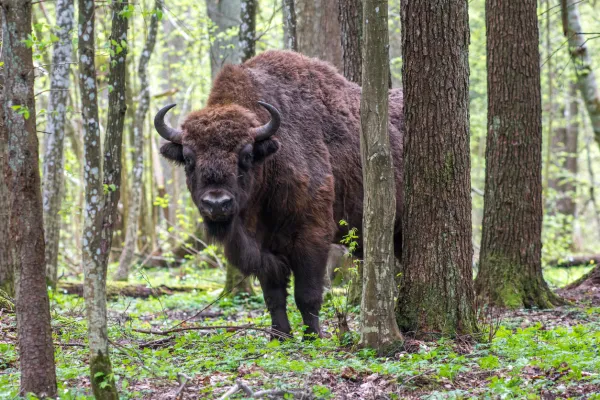

El bisonte europeo (Bison bonasus) se considera el mamífero con mayor tamaño en Europa. Es un bóvido, de la familia de las cabras, toros, ovejas y antílopes. Es un animal robusto, de pelaje oscuro, siendo más abundante el mismo en la cabeza y cuello. Tanto machos como hembras tienen cuernos de unos 50 cm. El bisonte europeo es nativo de países como Bielorrusia, Bulgaria, Alemania, Letonia, Lituania, Polonia, Rumania, Rusia, Eslovaquia y Ucrania. Se han introducido en hábitats forestales, pero prefieren espacios abiertos como prados, valles fluviales y tierras cultivadas abandonadas. Se alimentan preferentemente de vegetación no herbácea que digieren de mejor manera. Su estado actual es de casi amenazado, debido a la baja diversidad genética, lo que afecta el tamaño poblacional. También la fragmentación de las poblaciones, algunas enfermedades de la especie y la caza furtiva, merman de forma importante el número de individuos.
El desmán ibérico (Galemys pyrenaicus) pertenece a la familia de los tálpidos, que comparte con los topos. Es un animal de peso bajo, llegando hasta unos 80 gr. La longitud no suele superar los 16 cm, pero posee una cola larga, que puede incluso superar el largo del cuerpo. El desmán posee características entre una rata, un topo y una musaraña, lo que le hace peculiar. Vive en parejas, es un buen nadador donde se mueve con agilidad y cava madrigueras en la tierra. El desmán es nativo de Andorra, Portugal, Francia y España, habitando principalmente arroyos de montañas con corrientes rápidas, aunque puede hacer presencia en cuerpos de agua con movimientos lentos. Su estado actual es vulnerable, debido a la alteración del restringido hábitat donde se desarrolla.

La marmota alpina (Marmota marmota) es un roedor de gran tamaño dentro del contienen europeo, llegando a medir cerca de los 80 cm incluyendo su cola, con un peso de hasta unos 8 kg. Es un animal robusto, con patas y orejas cortas. Tiene hábitos diurnos, altamente sociable, el mayor tiempo lo pasa en busca de alimentos como pastos, juncos y hierbas para acumular reservas corporales y poder hibernar en el invierno. La marmota alpina es nativa de Austria, Alemania, Italia, Polonia, Eslovaquia, Eslovenia y Suiza. Construye madrigueras comunales en suelos aluviales o áreas rocosas, principalmente en los prados alpinos y en pastos con altitudes importantes. Está clasificada como de menor preocupación.